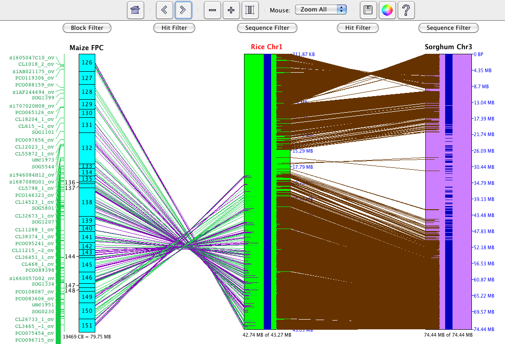
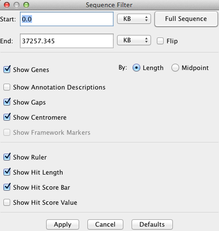
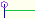
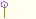
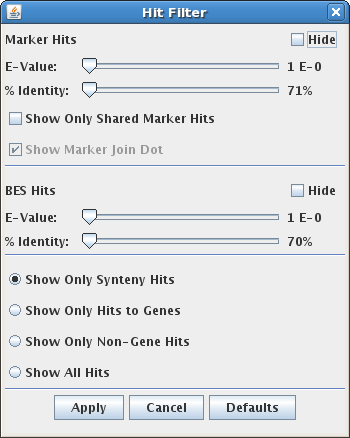

|
|
SyMAP 4.2 User Guide | |||||||||||||||||||||||||||||||||||||||||||||||||||||||||||||||||||||||||||||||||||||||||||||||||||||||||||||||||||||
|
||||||||||||||||||||||||||||||||||||||||||||||||||||||||||||||||||||||||||||||||||||||||||||||||||||||||||||||||||||||
|
This guide provides detailed instructions for the SyMAP user interface. For detailed information on installation, requirements, and capabilities of SyMAP, see the System Guide. For a quick visual introduction, see the Tour. The SyMAP interface has two parts:
The first sections below describe features of the Java application, while the final section describes the web-only displays. Update for v4.2: Each graphical page now has a save button, allowing the image to be saved in several formats, including scalable vector formats (eps, pdf, svg) which can be smoothly resized for publication.
Please send bug reports and suggestions to symap@agcol.arizona.edu. Contents
C. Soderlund, W. Nelson, A. Shoemaker and A. Paterson (2006)
SyMAP: A System for Discovering and Viewing Syntenic Regions of FPC maps
Genome Research 16:1159-1168.
C. Soderlund, M. Bomhoff, and W. Nelson (2010)
SyMAP: A turnkey synteny system with application to plant genomes.
Nucleic Acids Res 39(10):e68.

Dots represent anchors (also referred to as "hits"). A blue box indicates a Synteny Block determined by the SyMAP synteny-finding algorithm. The horizontal and vertical grid lines delineate the chromosomes (or linkage groups) of the two genomes being compared. The individual grid boxes for each chromosome/chromosome pair are referred to as Regions, and clicking on a region brings up a larger-scale Region view. Within the region view:
Home Resets the zoom selection to the full grid view of the entire dot plot. Zoom The plus (+) and minus (-) buttons shrink or grow the display. Scale The check box resizes the species displayed on the y-axis according to the current scale of the species displayed on the x-axis. Reference The drop-down menu allows the reference species on the x-axis to be changed. Size The slider increases/decreases the size of the dots in the display. Help Opens this manual in a web browser.

E-Value / %Identity Filter Hits can be filtered by their E-Value (FPC) and/or %Identity by sliding the corresponding slider to the desired value. When the slider is all the way to the left, the hits are not filtered at all. Show Only Block Hits A "block hit" is a hit that has been found by the SyMAP synteny-finding algorithm to contribute to a synteny block. Show All Hits Displays all hits. Note that the SyMAP hit loading algorithm removes some repetitive hits from the raw anchor set, so some hits from the raw BLAT or MUMmer files will not be shown. Highlight Block Hits Highlight hits that make up a synteny block in blue. Show Blocks This option draws blue rectangles around the synteny blocks. Show Empty Regions When deselected, hides regions that do not contain any synteny blocks.
The Explorer is a two-panel display in which the left panel is used to select specific chromosomes, while the right panel
shows the synteny for the selected chromosomes. Four different right-panel views are available:
Circular,
2D,
Dotplot,
and 3D (the latter is available in the standalone application but not through the web).
Below is a snapshot of the Explorer showing the circular format.

left panelThe left panel controls which species and chromosomes are shown:
Instructions and help are shown in the "Instructions" box. As the mouse moves over various components, instructions for that component are shown. The link below the instructions box opens this manual in a web browser (note: pop-ups must be enabled in your browser). The four buttons in the lower-left corner of the window change the view in the right panel, where the choices are 3D, 2D, Dotplot, and Circular. (As noted previously, the 3D format is not available in the web applet.) The Download Blocks button exports a table of all of the synteny block co-ordinates for the selected species; see also Data Download. Click the minus (-) button next to a project name or the Instruction box, and that section will be hidden; the minus sign will change to a plus. Click the plus (+) button to show the project graphic. right panelThe right panel shows the synteny display for the species and chromosomes selected on the left. There are four views: 3D, 2D, Dotplot, and Circular. The first three modes are essentially overview modes, while the 2D view allows zooming in to details, all the way to the basepair level if desired. Each right-panel display format has its own controls; see the individual sections for details.
The circular display shows the chromosomes arranged in a circle, with synteny blocks shown as colored
ribbons between the chromosomes (as illustrated above). The color of a ribbon comes from one of the two chromosomes it connects; clicking
one of the species names causes its colors to be used preferentially.
Clicking on a chromosome name causes ribbons from that chromosome to be shown on top.
Note, if you are running SyMAP over an X-windows session on a remote server, the circular display will draw very slowly. For this case, the 3D display is recommended (or, use VNC or screensharing to the remote server). +, -: The controls on the left above the circle image control various aspects of the display. The first two buttons change the size, while the third rotates the image. Scale to genome size: This checkbox causes the chromosomes to be drawn proportionately to their actual length in basepairs. If it is not checked then each species is allocated the same amount of space, e.g. for two species each one gets exactly half the circle. (For FPC projects, the basepair size is estimated using the "cbsize" project parameter.) Show all blocks: The dropdown menu controls how direct and inverted blocks are shown. One or the other may be hidden, or they may be shown with two-color format as used in the 3D display (inverted=green, direct=red). Self-align: This checkbox controls whether blocks are shown between chromosomes of the same species. By default they are not, unless there is only one species selected in the Explorer. Rotated text: Starting in v4.2, text labels are drawn horizontally rather than rotated to match the angle of the circle. If you wish to restore the previous behavior (which has problems on some platforms such as Mac), check this box.
The 3D display shows the selected chromosomes arrayed at equal spacing around the reference, which is
placed in the center (see figure below):

The synteny blocks are shown as colored ribbons, with direct synteny blocks colored red, and inverted blocks colored green. (Note that the direct and inverse designations are for the overall block, but blocks may contain smaller-scale regions which are inverted relative to the block as a whole.) Drag the mouse over the 3D view to rotate, move, or zoom the view, depending on which of the three Navigation buttons at the top is selected. For example, if the leftmost button is selected, as shown in the figure, then dragging with the mouse causes the figure to rotate.
The 2D display is activated from the Explorer by
clicking the 2D button, or by selecting a block in the Whole Genome Dot Plot.
Below is a screenshot depicting an FPC-to-sequence comparison for Maize FPC (chromosome 3) to Rice (chromosome 1) to Sorghum (chromosome 3). Note that rice chr1 is the "reference" chromosome, hence is placed in between the others.  The alignment window displays "tracks" (drawn as rectangles) of sequence information, showing synteny "hits" (drawn as lines) between tracks. There are three types of tracks:
History (Home, <, >) SyMAP retains a record of the prior views (like a web browser). The history navigation back (<) and forward (>) buttons allow you to move back and forth through the previous views. The Home button returns to the initial view. Zoom Buttons (-, +) The zoom buttons allow for quickly expanding and narrowing the view region. The minus (-) button shrinks the view region by 50%, keeping the same center, while the plus (+) button doubles the view region, again keeping the same center. Scale Button The Scale button (right of +) resizes the tracks so that they are in the same scale (base pairs per pixel) as the reference sequence track in the view. Mouse Function Selector This drop-down selector assigns a function to the mouse's left button click and drag actions:
Help Opens this manual in a web browser. Additional navigation:
Sequence TrackA Sequence track represents a contiguous piece of sequenced DNA, typically for a sequenced chromosome. The sequence length and the coordinates of the displayed region are indicated above and below the track.Annotation data of the following types may be loaded into SyMAP and displayed. (Note that display colors can be changed.)
The sequence information displayed can be configured via the Sequence Filter by clicking the Sequence Filter button above the sequence track, or by right-clicking the mouse over the sequence track. The example below shows a sequence-to-sequence alignment.
 Start and End The positions of the sequence display can be set via the corresponding text boxes. The units of the values entered can be selected from the accompanying drop down menus (BP, KB, MB, GB). Full Sequence Sets the start and end positions of the sequence display to encompass the whole chromosome. Flip Reverses the orientation of the sequence track. Show Genes Enables/disables the display of gene/exon annotations along the sequence. Show Framework Markers Typically genetic markers or radiation hybrid markers. This option enables/disables the display of framework markers (drawn as solid green rectangles) along the sequence. Show Gaps Enables/disables the display of sequence gaps (drawn as solid red rectangles) along the sequence. Show Centromere Enables/disables the display of the centromere (drawn as a cyan "X") on the sequence. Show Ruler Enables/disables the display of the sequence ruler along the right side of the sequence. Show Description for Annotations Enables/disables the display of the annotation descriptions along the right side of sequence. NOTE: this only works if you are zoomed in close enough that they can clearly be displayed. Show Hit Score Line Enables/disables the display of the score line next to each hit along the sequence. The length of the line represents the magnitude of the % Identity value for the hit. Show Hit Score Value Enables/disables the display of the score value next to each hit along the sequence. The score value corresponds to the % Identity value for the hit. Show Hit Length Enables/disables the display of the hit length line next to each hit along the sequence. The hit length line denotes the start and end points of the hits relative to the sequence (may not be visible for tiny hits).
Clicking on one of the contig rectangles of a block track brings up the contig track display for that particular contig. The filter options that are shared with the Contig track are maintained.
Block Title A Block track may simply be a group of contigs, in which case the block title is the project name (e.g., "Maize"). Or a block track may contain a synteny block, identified by SyMAP software, in which case the Block Title includes the Syteny Block Number. The Synteny Block Number consists of three fields: Project1Chromosome.Project2Chromosome.BlockIDIn the screenshot above, the Synteny Block Number "6.1.1" refers to Maize Chromosome 6 mapped to Rice Chromosome 1, synteny block #1 of this pairing.
See the Markers section, for more information on markers. Marker Name Allows control over which marker names/hits to display. A marker is specified by entering a search string for the marker name and selecting the appropriate setting in the show/hide drop-down. A wild-card character "*" may be used at either end, e.g. "*SSR*". Show No Marker Names Hide all marker names. Show Only Marker Names With Hits Only show the names of markers which have a hit somewhere along the chromosome currently being viewed. These hits may not be visible if the view has been zoomed. Show Only Marker Names With Visible Hits Only show the names of markers which have hits visible in the current view. Show All Marker Names Display the names of all markers on the block, regardless of hits. Contig Set Allows the user to define which contigs to display. Multiple contigs and ranges may be specified, for example "1,2,3,5-20,31,47" will display contigs 1,2,3,31,47, and all contigs between 5 and 20. The contigs are displayed in the order given. Flip Flip the entire block, reversing the display order of the contigs.
Since a contig track is usually accessed by choosing a contig from a block
track, a Block View link has been provided at the top of the contig
track which will return to the previous block view. The filter options that
are shared with the Block track are maintained when using this link.
 The contig information displayed can be controlled via the Contig Filter. Clones are represented as short vertical lines. Dots on the ends of the line represent a BES.
A green line in the middle of the clone going towards another track is a marker hit. Gold-colored clones are clones having both BES hits with the same orientation. This can indicate an inversion breakpoint within the clone. Moving the mouse over a clone will give a description in the status bar and highlight the clone and its hits. Moving the mouse over a clone's BES gives more information on that BES's hits. The clone information displayed can be configured via the Contig Filter by clicking the Contig Filter button above the contig track, or by right-clicking the mouse over the contig track. Markers are shown next to Block tracks and Contig tracks. Moving the mouse over a marker name will highlight the corresponding hits. Clicking on a marker's name will keep the marker highlighted until another marker is clicked or the same marker is clicked again. Markers are colored based on their hit information and if they are shared.
BES Hit is signified by a purple line between two tracks. Marker Hit is signified by a green line between tracks. If a marker of the same name can be found on another track in the view, the marker hit will be blue. When viewing a contig in the Contig view, the hits from the same marker on different clones are joined together at a red dot. Moving the mouse over the red dot will highlight the marker's name. Clone Fingerprint Hit is signified by a black line between two tracks. Contig Filter allows the user to select the type of information shown for the currently visible contig. It augments the Block Filter with options specific to clones. It is accessed via the Contig Filter button above the contig track, or by right-clicking the mouse over the contig track.
Change Contig a quick way to change the currently viewed contig. Clone Name: The Clone names and hits can be shown, hidden, or highlighted through the Clone Name text box. A clone name can be searched on by entering a search string for the clone name and choosing to show, hide, or highlight those clones that match it. A wildcard "*" may be used at the beginning or end. Clone with Remarks: Clones can be filtered or highlighted based on the remarks attached to them in the FPC file. For convenience, all remarks present in the contig are listed in the selection box, and one or more may be selected for filtering (to select multiple, hold down the Control key while clicking). Clones containing at least one of the remarks selected are filtered or highlighted based on the option selected above the remarks selection box.
Show Clone Names The user can choose to show clone names by selecting the Show Clone Names
check box. The width of the contig can than be adjusted to
give sufficient space for the names.
Show Only Clones with current BES paired hits Show only those clones for which both BES have a hit showing in the current view.
Show Only Clones with BES paired hits Show only those clones for which both BES have hits (filled-in circles).
Start and End The portion of the contig to be displayed can be adjusted through the start and end text boxes.
The desired start and end points are entered in CB units.
Width of Contig The width of the contig can be adjusted using the slider.
Flip the Contig Reverse the order in which the clones are displayed.

A base view of the hits along a sequence track can be brought up by dragging the mouse along the sequence and releasing when the desired range is highlighted. The range selected is increased if necessary to show the full length of the markers and BESs involved. If the user selected range contains blank areas (no marker or BES hits) the range is reduced to include only the genes with hits. There is a maximum range of 50Kb that can be selected for the base view, so zooming in on an area first may be necessary. If there are multiple hits in the selected region, than the base view of those hits appears in a new dialog. This view consists of a ruler along the top showing the area of the sequence covered, the hits, and the genes.
Hits
Genes
The SyMAP Query interface has been greatly expanded in v4.0. This interface has two basic
functions:
A. Locate homologous (or paralogous) regions based on annotation and location B. Create putative gene families spanning multiple species, and apply family-based filters Some sample queries which are possible through the interface: • Find un-annotated regions on one genome which are homologous to regions on another genome which have already been annotated. • Find putative gene families which are present in one lineage but absent in another. • Identify the likely orthologs on genome A of a given gene on genome B, by using synteny blocks or exactly collinear pairs to filter out probable paralogs. • Find orphan genes which are specific to one genome. To open the query interface, first select two or more sequence projects in the Project Manager (note, the queries are not supported for FPC maps). Then press the "SyMAP Queries" button to open the interface:
The Overview window (above) lists the projects which were selected for querying. To set up a query, open the "Query Setup" window by clicking on its title in the left panel. This opens the window below:
Here you set up the query and then press "Do Search" to execute it. The query occurs in three stages, corresponding to the section numbers on the Query Page. Each stage has its own filters, as follows: 1. Filter hitsThe first stage is to retrieve hits (anchors) from the database, based on filters such as chromosome and annotation string. Note that each anchor connects two species and hence represents a pair of putatively-related regions on the two species. Filters are as follows:
Annotation String Search
Enter annotation search terms. Hits will be returned which overlap a matching annotation on either side. Chromsome/location filters Each selected species has a row in which you can select to search either all its sequences, or a particular sequence or basepair region. Only synteny hits Return only hits which are part of a syntenic block. This helps to screen false positive hits, but can also conceal true hits that are not part of a detectable syntenic block. (Note that SyMAP hits are already filtered during loading using a reciprocal-top-2 filter.) Only hits in a collinear gene pair Return only hits which are part of a pair of aligning genes having no intervening non-aligning genes. This relates to the RunSize column, which is one of the optional columns of the Query Result table. RunSize shows the size of collinear chain which a hit is contained in, hence this checkbox is equivalent to RunSize at least 2. Note that a collinear chain is not the same as a SyMAP synteny block, because blocks require at least 7 anchors, and are allowed to have intervening genes which do not align. Show orphan genes If checked, then the results will show all genes which do not overlap any of the hits matching the search criteria (i.e, the hits which would be shown in the table if this checkbox were not checked). Note that the genes must also meet the search criteria, e.g. matching the annotation query string and the chromosome location requirements.
2. Filter putative gene families (PgeneFs)Using the hits that pass the Stage 1 filters, SyMAP constructs putative gene families (PgeneFs) spanning the selected species. This is done by grouping hits whose hit regions overlap on at least one genome. Note, if you have more than 6 species selected, this stage can take an hour or more.Each PgeneF is given a number, which is shown in the Query Results table (column name "PgeneF"). The size of the PgeneF is also shown (column "PgFSize"). Filters at this stage apply to the PgeneF as a whole:
Include/Exclude
These filters permit searching for gene families shared by one group of species but not present in another. If a species is checked to include, then the PgeneF will only be retained if it includes at least one hit which hits that species. If a species is checked to exclude, then the PgeneF will be discarded if any of its hits are to that species. No annotation to included species Find PgeneFs which are not yet annotated. A PgeneF will be discarded if it is annotated on any of the species which are checked in the Include line. Complete linkage of included species Require the PgeneF to be fully linked, i.e. for each pair of species A and B in the group, there must be a hit linking A to B.
3. Filter displayed hitsThe query returns hits between all pairs of the selected species; however, you may only be interested in seeing those which hit certain species. To achieve this, select those species in the Include row of Filter Stage 2, and also check the box below, Show only hits to the included species. Only those hits will be shown, although the PgeneF numbers will reflect groupings created using all hits.
SyMAP Query ResultsWhen the query is complete, the Query Results page opens showing the table of results:
The table contains all the hits (anchors) resulting from the query. Each hit connects two species and you can see the respective chromosomes and start/end locations of the hits, as well as gene annotations overlapped by the hits. Note that the table contains columns for all of the selected species, but each hit only connects two species, and the other species columns are empty. If the query specified orphan genes, then each row represents one gene and shows data only for one species. Note that entries in the table may be selected. To select more than one entry, use "ctrl-click".
Button functions
Show Synteny
Brings up a SyMAP 2-track view for each selected entry, so the hits can be seen in their full chromosomal context. The hits are initially padded to each side by the margin amount indicated (default 50kb), but you can easily zoom further out in the 2-track views. Save CSV Saves the selected hits using the selected set of columns to a CSV format suitable for import into Excel. Save for Reload Saves the selected hits in a CSV format which can be reloaded back into SyMAP later (click "Results" on the lefthand pane, and use the "Load Saved Query" button). The saved table includes all possible columns, not just those currently selected for display. Save as Fasta Sequences from the selected hits are written to a Fasta file. Both sides of each hit are written, using the start/end coordinates shown in the table. Align sequences Sequences for the selected hits are written out and a multiple alignment is created using MUSCLE (Edgar 2004 NAR:32). If no selection is made then the whole table is used. Note that alignments of more than 10 sequences can take considerable time.
Results TableYou can sort the columns by clicking on them, and rearrange them by dragging the header boxes. You can add/remove columns using the "Select Columns" button at the bottom. This opens up a column-selection section, shown here:
Following are the meanings of the columns:
StatisticsThis section shows overall statistics for the query results, for each species. The meaning of the terms is as follows:
hits
Number of hits involving that species. distinct regions Number of distinct regions covered on that species (see the definition of the "#PGF" column above). annotated Out of the number of distinct regions, how many have annotation. orphans Number of orphan genes returned for this species. chrs Number of chromosomes (or draft sequences) this species has, for reference.
As of v4.2, there are two ways to download data for SyMAP synteny blocks, individual anchors, and annotations:
| ||||||||||||||||||||||||||||||||||||||||||||||||||||||||||||||||||||||||||||||||||||||||||||||||||||||||||||||||||||||


| Email Comments To: symap@agcol.arizona.edu |